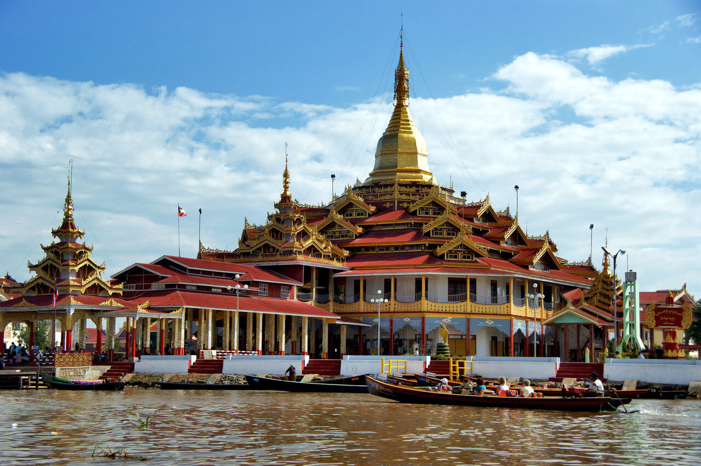
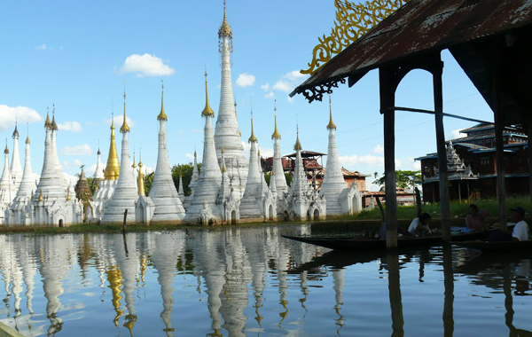

Inle Lake a freshwater lake located in the Nyaungshwe Township of Shan State, part of Shan Hills in Myanmar (Burma). It is the second largest lake in Myanmar with an estimated surface area of 44.9 square miles (116 km2), and one of the highest at an elevation of 2,900 feet (880 m). During the dry season, the average water depth is 7 feet (2.1 m), with the deepest point being 12 feet (3.7 m). During the rainy season, this can increase by 5 feet (1.5 m).The watershed area for the lake lies to a large extent to the north and west of the lake. The lake drains through the Nam Pilu or Balu Chaung on its southern end. There is also a hot spring on its northwestern shore.
|  | Hpaung Daw U Pagoda Hpaung Daw U Pagoda is a notable Buddhist site in Myanmar (formerly Burma), located on the Inle Lake in Shan State.The pagoda houses five small gilded images of Buddha, which have been covered in gold leaf to the point that their original forms cannot be seen. The gold-leaf application to such excess is relatively recent. Old photographs hanging on the monastery walls show some of the images in a more pristine form. It is reported that some gold has been removed on occasion to reduce its mass. |
|---|
Alodaw Pauk Pagoda The Alodaw Pauk Pagoda is one of the 84,000 pagodas built by a famous king - King Thiri Dhamma Thawka. When King Anawrahta arrived in Inle Lake, he rebuilt the pagoda because the only thing left was the foot of the original. The pagoda was originally named the Innphaya Pagoda, but it was changed into Yadana Pagoda before assuming its current name. |
 |
|---|
Copyright @AnyGo Travel and Tours
2020 All Rights Reserved